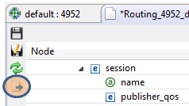

Tutorial Step 6: Routing Service
Configuration
In this step of the tutorial, we
will modify the routing service configuration. Click on the
Configuration link and you will see the configuration that is
currently being used.
6.1 Route Participant Info
The default configuration file for Routing Service routes various
shapes from domain 0 to domain 1. In the Design view of the editor,
open routing_service -> domain_route node. Open the two participant
nodes. Notice that participant 1 specifies domain 0 and participant 2
specifies domain 1.
6.2 Topic Route Info and
Transformation
Open the session node and explore the content. The default
configuration routes all topics from domain 0 to domain 1.

6.3 Publish an additional Circle in
Domain 0
In step 3 of the tutorial, we published a square in domain 0. Follow
similar steps to publish a red circle. We will apply some filters to
these shapes in the next step.
6.4 Adding Topic filters
Open the Session -> auto_topic_route -> input node. Change the
"allow_stream_name_filter" from "*" to "Square". Do the same for the
output node, as shown in the screenshot below.
6.5 Applying Configuration Changes:
Notice there is an asterisk (*) next to the configuration file's tab
name; this means the file's content has been modified. To apply this
updated configuration to the running instance of Routing Service,
click on the Configuration Apply Button on the toolbar.

Now you should see that the square is still routed to domain 0, but the
circle is no longer routed.
For more
details on how Routing Service's configuration works, see the Routing
Service User's Manual. For more details on how Admin Console can be
used to control Routing Service, see the
Routing Service
View.